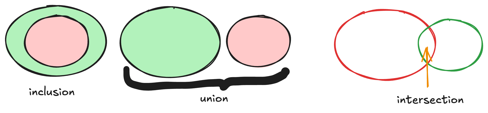
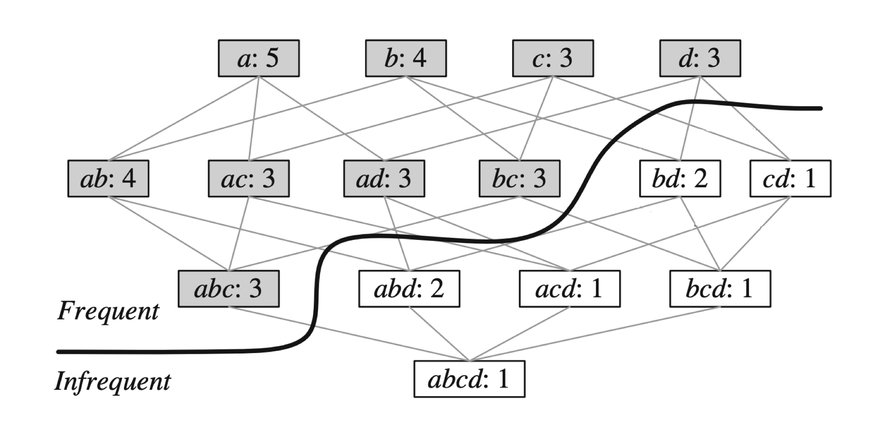

Chapitre 6 : Frequent Itemset Mining
Le Frequent Itemset Mining (FIM) cherche les combinaisons d’items fréquentes dans une base de transactions, puis en dérive des règles d’association.
Objectifs
À la fin de ce chapitre, vous devez pouvoir :
Formaliser le problème de FIM (couverture, support, seuil)
Comprendre la résolution (lattice, parcours, propriété a priori)
Implémenter une approche naïve → heuristique → a priori
Générer des règles d’association (confiance, lift)
Distinguer patterns fermés et maximaux
1. Motivation : le panier du supermarché
Comprendre l’habitude des clients (fréquence d’achat) permet : la gestion des stocks, la recommandation (« ceux qui achètent X achètent aussi Y »), et le ciblage des promotions.
On considère le panier d’un client sans doublons ni prix ⇒ ce sont des ensembles ⇒ on peut faire du Frequent Itemset Mining.
{kind=link}

Découvrir les combinaisons d’achats fréquentes.
Base de transactions (TDB) — l’ensemble des paniers (panier = transaction) :
horizontale : chaque ligne = le panier d’un client ;
verticale : chaque ligne = les clients ayant acheté un produit donné ;
dense/éparse : lignes = clients, colonnes = produits, cellule (i, j) = 1 si le produit i est acheté par le client j, sinon 0.
2. Le problème de FIM
Soit un alphabet \(\Sigma\) (produits disponibles), une transaction \(T \subseteq \Sigma\), une base \(TDB\), et un seuil \(\theta\).
Couverture :
cover(P, TDB)= les clients ayant acheté la combinaison P.\[\text{cover}(P, TDB) = \{\, tid_i : T_i \in TDB \ \text{et}\ P \subseteq T_i \,\}\]Support : le nombre de clients ayant acheté P.
\[\text{support}(P, TDB) = |\text{cover}(P, TDB)|\]
Problème de FIM
Trouver toutes les combinaisons \(P\) telles que \(\text{support}(P, TDB) \ge \theta\).
3. Résolution
Énumérer les possibilités ⇒ le treillis (lattice), niveau par niveau — il y a \(2^{|\Sigma|}\) possibilités (16 pour 4 items).
Calculer efficacement le support de chaque pattern.
Trouver un parcours optimal.
4. Implémentations
On veut fim(alphabet, TDB, theta) qui renvoie la liste des patterns fréquents.
(a) Approche naïve — DFS branchant sur tous les éléments :
def dfs(P, TDB, alphabet, theta):
print(P)
for e in alphabet:
dfs(P | {e}, TDB, alphabet, theta)
(b) Approche heuristique — ordre virtuel : ne brancher que sur les successeurs :
def successeur(P, alphabet):
return alphabet[P[-1]+1:] # éléments après le dernier ajouté
def dfs(P, TDB, alphabet, theta):
print(P)
for e in successeur(P, alphabet):
dfs(P + [e], TDB, alphabet, theta)
(c) Approche A priori — heuristique + antimonotonicité :
Propriété a priori (antimonotonicité)
Si un pattern est fréquent, tous ses sous-ensembles le sont aussi.
Si un pattern n’est pas fréquent, aucun de ses sur-ensembles ne l’est (donc on élague la branche).
def dfs(P, TDB, alphabet, theta):
print(P)
for e in successeur(P, alphabet):
cand = P + [e]
if support(cand, TDB) >= theta: # élagage a priori
dfs(cand, TDB, alphabet, theta)
(d) Approches avancées (Partie 3) :
Eclat : TDB verticale + a priori + intersections d’ensembles intelligentes ;
FP-Growth : TDB horizontale + a priori + FP-tree pour évaluer le support ;
LCMv3 : encore plus d’optimisations (parmi les plus rapides).
D’autres variantes prennent en compte d’autres paramètres : high-utility mining (prix + quantité), closed/max mining (forme compressée, avec ou sans perte).
5. Règles d’association
Trouver les patterns est utile ; en déduire des règles l’est davantage. Une règle \(X \rightarrow Y\) (X, Y des patterns) exprime que Y a des chances d’arriver sachant que X est arrivé.
C’est une probabilité conditionnelle. Ex. : \(\text{confiance}(\{mangue, orange\} \rightarrow \{citron\}) = 75\%\) signifie que 75 % des clients achetant mangue et orange achètent aussi du citron.
Autre métrique utile, le lift (indépendance si = 1) :
Problème des règles d’association
Trouver toutes les règles \(X \rightarrow Y\) dont les patterns sont fréquents (support ≥ \(\theta\)) et la confiance ≥ un seuil \(\beta\).
{kind=link}

Des patterns fréquents aux règles d’association.
6. Patterns fermés et maximaux
Les patterns fréquents sont souvent trop nombreux : on les compresse.
Pattern fermé : aucun sur-ensemble n’a le même support.
\[P \text{ fermé} \iff \nexists\, P' \supset P : \text{support}(P') = \text{support}(P)\]⇒ compression SANS perte (on retrouve tous les fréquents et leurs supports).
Pattern maximal : aucun sur-ensemble n’est fréquent (\(\nexists\, P' \supset P\) fréquent).
⇒ compression AVEC perte (on retrouve les fréquents mais pas tous leurs supports).
Exercice
Voir le TP Apriori : implémentez une fonction qui reçoit une
TDB et un \(\theta\) et renvoie les patterns fréquents (indice Python :
itertools, set.issubset).